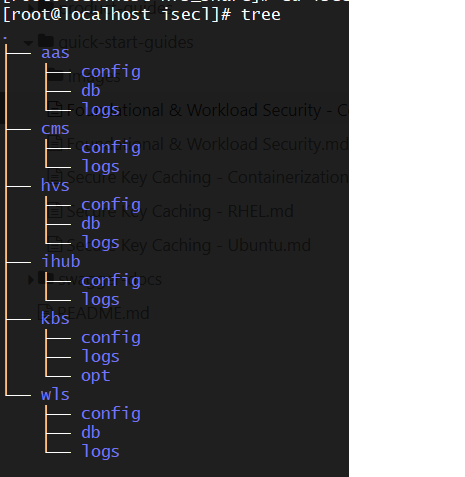

Intel® Security Libraries Container Deployment
Prerequisites for Containerized Deployment using Kubernetes
Supported Operating Systems
- RHEL 8.3
- Ubuntu 18.04
Kubernetes Distributions
The included Intel SecL container deployment scripts can deploy using the following Kubernetes distributions:
- Single-node:
microk8s(1.17.17) - A "single-node" deployment will deploy all of the Intel SecL services into a single microk8s deployment on a single bare metal container host. Because all resources are deployed onto a single worker, only local resources are required. This deployment type is best used for POCs and demos due to the requirement of a physical server.
- Multi-node:
kubeadm(1.17.17) - A "multi-node" deployment will deploy the Intel SecL services using kubeadm as a Kubernetes pod, using NFS shared storage. Any worker nodes that will be attested must be bare metal physical servers; agents will be deployed as privileged DaemonSets.
Container Runtime
- CRIO-1.17.5 on RHEL 8.3
- CRIO-1.17.5 on Ubuntu 18.04
Storage
- Single-node:
hostPathstorage for all services and agents - Multi-node:
NFSstorage for all services,hostPathstorage for agents
Building from Source
Prerequisites
The following steps need to be performed on a RHEL 8.3 Build machine (VM/Physical Node)
System Tools and Utilities
# RedHat Enterprise Linux 8.3
dnf install -y git wget tar python3 gcc gcc-c++ zip make yum-utils openssl-devel
dnf install -y https://dl.fedoraproject.org/pub/fedora/linux/releases/32/Everything/x86_64/os/Packages/m/makeself-2.4.0-5.fc32.noarch.rpm
ln -s /usr/bin/python3 /usr/bin/python
ln -s /usr/bin/pip3 /usr/bin/pip
# Ubuntu-18.04
apt update
apt remove -y gcc gcc-7
apt install -y python3-problem-report git wget tar python3 gcc-8 make makeself openssl libssl-dev libgpg-error-dev
cp /usr/bin/gcc-8 /usr/bin/gcc
ln -s /usr/bin/python3 /usr/bin/python
ln -s /usr/bin/pip3 /usr/bin/pip
Repo tool
tmpdir=$(mktemp -d)
git clone https://gerrit.googlesource.com/git-repo $tmpdir
install -m 755 $tmpdir/repo /usr/local/bin
rm -rf $tmpdir
Golang
wget https://dl.google.com/go/go1.14.4.linux-amd64.tar.gz
tar -xzf go1.14.4.linux-amd64.tar.gz
sudo mv go /usr/local
export GOROOT=/usr/local/go
export PATH=$GOROOT/bin:$PATH
rm -rf go1.14.4.linux-amd64.tar.gz
Docker
# RedHat Enterprise Linux-8.3
dnf module enable -y container-tools
dnf install -y yum-utils
yum-config-manager --add-repo https://download.docker.com/linux/centos/docker-ce.repo
dnf install -y docker-ce-19.03.13 docker-ce-cli-19.03.13
systemctl enable docker
systemctl start docker
# Ubuntu-18.04
apt-get install -y \
apt-transport-https \
ca-certificates \
curl \
gnupg \
lsb-release
curl -fsSL https://download.docker.com/linux/ubuntu/gpg | sudo gpg --dearmor -o /usr/share/keyrings/docker-archive-keyring.gpg
echo \
"deb [arch=amd64 signed-by=/usr/share/keyrings/docker-archive-keyring.gpg] https://download.docker.com/linux/ubuntu
$(lsb_release -cs) stable" | sudo tee /etc/apt/sources.list.d/docker.list > /dev/null
apt-get update
apt-get install docker-ce=5:19.03.13~3-0~ubuntu-bionic docker-ce-cli=5:19.03.13~3-0~ubuntu-bionic containerd.io
systemctl enable docker
systemctl start docker
Apply the below steps only if running behind a proxy
mkdir -p /etc/systemd/system/docker.service.d
touch /etc/systemd/system/docker.service.d/proxy.conf
#Add the below lines in proxy.conf
[Service]
Environment="HTTP_PROXY=<http_proxy>"
Environment="HTTPS_PROXY=<https_proxy>"
Environment="NO_PROXY=<no_proxy>"
systemctl daemon-reload
systemctl restart docker
Building OCI Container images and K8s Manifests
Foundational Security
- Sync the repos
mkdir -p /root/intel-secl/build/fs && cd /root/intel-secl/build/fs
repo init -u https://github.com/intel-secl/build-manifest.git -m manifest/fs.xml -b refs/tags/v4.0.0
repo sync
- Run the
pre-requisitessetup script
cd utils/build/foundational-security/
chmod +x fs-prereq.sh
./fs-prereq.sh -s
- Install skopeo
# RHEL 8.x
dnf install -y skopeo
# Ubuntu 18.04
add-apt-repository ppa:projectatomic/ppa
apt-get update
apt-get install skopeo
-
Build
-
Single-node:
- A "single-node" deployment will deploy all of the Intel SecL services into a single microk8s deployment on a single bare metal container host. Because all resources are deployed onto a single worker, only local resources are required. This deployment type is best used for POCs and demos due to the requirement of a physical server
- Single node cluster with microk8s -
make k8s-aio
-
Multi-node:
kubeadm(1.17.17)- A "multi-node" deployment will deploy the Intel SecL services using kubeadm as a Kubernetes pod, using NFS shared storage.
- Multi node cluster with kubeadm -
make k8s
-
After the build process is complete, the container images, Kubernetes manifests and deployment scripts can be found in the following folder:
/root/intel-secl/build/fs/k8s/
Workload Confidentiality
Workload Confidentiality can be used with either the CRIO container runtime.
Container Confidentiality with CRIO Runtime
- Sync the repos
mkdir -p /root/intel-secl/build/cc-crio && cd /root/intel-secl/build/cc-crio
repo init -u https://github.com/intel-secl/build-manifest.git -m manifest/cc-crio.xml -b refs/tags/v4.0.0
repo sync
- Run the
pre-requisitesscript
cd utils/build/workload-security
chmod +x ws-prereq.sh
./ws-prereq.sh -c
- Build
cd /root/intel-secl/build/cc-crio
#Single node cluster with microk8s
make k8s-aio
#Multi node cluster with kubeadm
make k8s
- The container images, Kubernetes manifests and deployment scripts will output to the following folder:
/root/intel-secl/build/cc-crio/k8s/
Intel® SecL-DC Foundational Security K8s Deployment
This section details deployment of Intel SecL services as a Kubernetes deployment, using a privileged DaemonSet for the Trust Agent and Workload Agent.
Pre-requisites
-
Install
opensslon the Kubernetes control node -
Ensure a container registry is running locally or remotely.
Note
For the single-node microk8s deployment, a registry can be brought up by using microk8s addons. More details can be found in the Microk8s documentation. This is not mandatory; if a remote registry already exists, it can be used.
Note
For multi-node kubeadm deployment, a container registry is required.
- Push all container images to container registry.
# Without TLS enabled
skopeo copy oci-archive:<oci-image-tar-name> docker://<registry-ip/hostname>:<registry-port>/<image-name>:<image-tag> --dest-tls-verify=false
# With TLS enabled
skopeo copy oci-archive:<oci-image-tar-name> docker://<registry-ip/hostname>:<registry-port>/image-name>:<image-tag>
Note
For microk8s deployments, when the container registry is enabled locally, the OCI container images need to be copied to the node where registry is enabled and then the above command can be run. This is not required if a remote registry is available.
- On each worker node registered to the Kubernetes control plane, perform the following prerequisite steps:
Foundational Security
-
Tboot-1.10.1or later to be installed for nonSUEFIservers. Tboot installation Details -
Only for Ubuntu, run the following command
$ modprobe msr
Workload Security
Container Confidentiality with CRIO runtime
Tboot-1.10.1or later to be installed for nonSUEFIservers. Tboot installation Details-
Copy
container-runtimedirectory to each of the physical servers -
Run the
install-prereqs-crio.shscript on the physical servers fromcontainer-runtime -
Reboot the server
-
For Ubuntu worker nodes only, run the following command
$ modprobe msr
Deploy
Single-Node Deployment
A single-node deployment utilizes Microk8s to deploy all services onto a single physical server. This deployment type is best suited to POCs and demos.
Pre-requisites
Setup
-
microk8smust be installed on a physical server with a supported combination of platform integrity security technologies enabled. -
Copy all manifests and OCI container images as required to the Kubernetes control node
-
Ensure a container registry is available
-
The Kubernetes cluster admin can configure the existing bare metal worker nodes or register fresh bare metal worker nodes with labels. For example, a label like
node.type: TXT-ENABLEDornode.type: SUEFI-ENABLEDrespectively forTXT/SUEFIenabled servers can be used by the cluster admin to distinguish the baremetal worker node and the same label can be used in ISECL Agent pod configuration to schedule on all worker nodes marked with the label. The same label is being used as default in the Kubernetes manifests. This can be edited ink8s/manifests/ta/daemonset.yml,k8s/manifests/wla/daemonset.yml
#Label node for TXT
kubectl label node <node-name> node.type=TXT-ENABLED
#Label node for SUEFI
kubectl label node <node-name> node.type=SUEFI-ENABLED
-
In a
microk8scluster, the--allow-privileged=trueflag needs to be added to thekube-apiserverunder/var/snap/microk8s/current/args/kube-apiserverand restartkube-apiserverwithsystemctl restart snap.microk8s.daemon-apiserverto allow running of privileged containers likeTRUST-AGENTandWORKLOAD-AGENT -
For container confidentiality use cases, ensure a backend KMIP-2.0 compliant server like pykmip is up and running.
Manifests
- Update all the Kubernetes manifests with the image names to be pulled from the registry
- The
tolerationsandnode-affinityfor the isecl-scheduler and isecl-controller need to be updated in the respective manifests under themanifests/k8s-extensions-controllerandmanifests/k8s-extensions-schedulerdirectories tomicrok8s.io/clusterbased on the Kubernetes distribution (kubeadmandmicrok8s,respectively)
Deploy steps
The bootstrap script will facilitate the deployment of all Intel SecL Foundational Security components based on the use cases to be enabled.
Update .env file
#Kubernetes Distribution - microk8s
K8S_DISTRIBUTION=microk8s
K8S_CONTROL_PLANE_IP=
K8S_CONTROL_PLANE_HOSTNAME=
# cms
CMS_BASE_URL=https://cms-svc.isecl.svc.cluster.local:8445/cms/v1
CMS_SAN_LIST=cms-svc.isecl.svc.cluster.local,<K8s control-plane IP/K8s control-plane Hostname>
CMS_K8S_ENDPOINT_URL=https://<k8s control-plane IP>:30445/cms/v1
# authservice
AAS_API_URL=https://aas-svc.isecl.svc.cluster.local:8444/aas/v1
AAS_API_CLUSTER_ENDPOINT_URL=https://<K8s control-plane IP>:30444/aas/v1
AAS_ADMIN_USERNAME=admin@aas
AAS_ADMIN_PASSWORD=aasAdminPass
AAS_DB_USERNAME=aasdbuser
AAS_DB_PASSWORD=aasdbpassword
AAS_DB_HOSTNAME=aasdb-svc.isecl.svc.cluster.local
AAS_DB_PORT="5432"
AAS_DB_NAME=aasdb
AAS_DB_SSLMODE=verify-full
AAS_SAN_LIST=aas-svc.isecl.svc.cluster.local,<K8s control-plane IP/K8s control-plane Hostname>
#NATS_ACCOUNT_NAME=ISecL-account
# Workload Service
WLS_SERVICE_USERNAME=admin@wls
WLS_SERVICE_PASSWORD=wlsAdminPass
WLS_DB_USERNAME=wlsdbuser
WLS_DB_PASSWORD=wlsdbpassword
WLS_DB_HOSTNAME=wlsdb-svc.isecl.svc.cluster.local
WLS_DB_NAME=wlsdb
WLS_DB_PORT="5432"
WLS_API_URL=https://wls-svc.isecl.svc.cluster.local:5000/wls/v1
WLS_CERT_SAN_LIST=wls-svc.isecl.svc.cluster.local
# Host Verification Service
HVS_SERVICE_USERNAME=admin@hvs
HVS_SERVICE_PASSWORD=hvsAdminPass
HVS_DB_USERNAME=hvsdbuser
HVS_DB_PASSWORD=hvsdbpassword
HVS_DB_HOSTNAME=hvsdb-svc.isecl.svc.cluster.local
HVS_DB_NAME=hvsdb
HVS_CERT_SAN_LIST=hvs-svc.isecl.svc.cluster.local,<K8s control-plane IP/K8s control-plane Hostname>
HVS_DB_PORT="5432"
HVS_URL=https://hvs-svc.isecl.svc.cluster.local:8443/hvs/v2/
#Nats Servers configuration for TA and HVS
#NATS_SERVERS=nats://<K8s control-plane IP/Hostname>:30222
# ihub bootstrap
IHUB_SERVICE_USERNAME=admin@hub
IHUB_SERVICE_PASSWORD=hubAdminPass
IH_CERT_SAN_LIST=ihub-svc.isecl.svc.cluster.local,<K8s control-plane IP/K8s control-plane Hostname>
# For microk8s
# K8S_API_SERVER_CERT=/var/snap/microk8s/current/certs/server.crt
K8S_API_SERVER_CERT=/var/snap/microk8s/current/certs/server.crt
# This is valid for multinode deployment, should be populated once ihub is deployed successfully
IHUB_PUB_KEY_PATH=
HVS_BASE_URL=https://hvs-svc.isecl.svc.cluster.local:8443/hvs/v2
# TrustAgent
# e.g TA_CERT_SAN_LIST=*.example.com,192.168.1.*
TA_CERT_SAN_LIST=
TPM_OWNER_SECRET=
# Workload Agent
WLA_SERVICE_USERNAME=wlauser@wls
WLA_SERVICE_PASSWORD=wlaAdminPass
# KBS
ENDPOINT_URL=https://kbs-svc.isecl.svc.cluster.local:9443/v1
KBS_CERT_SAN_LIST=kbs-svc.isecl.svc.cluster.local,<K8s control-plane IP>,<K8s control-plane Hostname>
KMIP_HOSTNAME=<KMIP IP/Hostname>
KMIP_SERVER_IP=
KMIP_SERVER_PORT=
# Retrieve the following KMIP server’s client certificate, client key and root ca certificate from the KMIP server.
# This key and certificates will be available in KMIP server, /etc/pykmip is the default path copy them to this system manifests/kbs/kmip-secrets path
KMIP_CLIENT_CERT_NAME=client_certificate.pem
KMIP_CLIENT_KEY_NAME=client_key.pem
KMIP_ROOT_CERT_NAME=root_certificate.pem
# ISecl Scheduler
# For microk8s
# K8S_CA_KEY=/var/snap/microk8s/current/certs/ca.key
# K8S_CA_CERT=/var/snap/microk8s/current/certs/ca.crt
K8S_CA_KEY=/var/snap/microk8s/current/certs/ca.key
K8S_CA_CERT=/var/snap/microk8s/current/certs/ca.crt
# populate users.env
ISECL_INSTALL_COMPONENTS="AAS,HVS,WLS,IHUB,KBS,WLA,TA,WPM"
#NATS_CERT_SAN_LIST=
#NATS_TLS_COMMON_NAME=
GLOBAL_ADMIN_USERNAME=
GLOBAL_ADMIN_PASSWORD=
INSTALL_ADMIN_USERNAME=
INSTALL_ADMIN_PASSWORD=
WPM_SERVICE_USERNAME=
WPM_SERVICE_PASSWORD=
CUSTOM_CLAIMS_COMPONENTS=
CCC_ADMIN_USERNAME=
CCC_ADMIN_PASSWORD=
Run scripts on Kubernetes Controller Node
- These bootstrap scripts are sample scripts to allow for a quick start of Intel SecL services and agents.
#Pre-reqs.sh
./pre-requisites.sh
#isecl-bootstrap-db-services
#Reference
#./isecl-bootstrap-db-services.sh: option requires an argument -- h
#Usage: ./isecl-bootstrap-db-services.sh [-help/up/purge]
# -help print help and exit
# up Bootstrap Database Services for Authservice, Workload Service and Host verification Service
# purge Delete Database Services for Authservice, Workload Service and Host verification Service
./isecl-bootstrap-db-services.sh up
#isecl-bootstrap
#Reference
#Usage: Usage: ./isecl-bootstrap.sh [-help/up/down/purge]
# -help Print help and exit
# up [all/<agent>/<service>/<usecase>] Bootstrap ISecL K8s environment for specified agent/service/usecase
# down [all/<agent>/<service>/<usecase>] Delete ISecL K8s environment for specified agent/service/usecase [will not delete data, config, logs]
# purge Delete ISecL K8s environment with data, config, logs [only supported for single node deployments]
# Available Options for up/down command:
# agent Can be one of tagent, wlagent
# service Can be one of cms, authservice, hvs, ihub, wls, kbs, isecl-controller, isecl-scheduler
# usecase Can be one of foundation-security, workload-security, isecl-orchestration-k8s
./isecl-bootstrap.sh up <all/usecase of choice>
- Perform the following steps for isecl-scheduler
#Copy scheduler-policy.json
cp manifests/k8s-extensions-scheduler/config/scheduler-policy.json /opt/isecl-k8s-extensions/
#Edit the kube-scheduler
vi /var/snap/microk8s/current/args/kube-scheduler
#Add the below line
--policy-config-file=/opt/isecl-k8s-extensions/scheduler-policy.json
#Restart kubelet
systemctl restart snap.microk8s.daemon-kubelet.service
Multi-Node Deployment
A multi-node deployment will deploy Intel SecL control plane services as a pod on a kubeadm Kubernetes cluster, using a DaemonSet to deploy agent components to worker nodes.
Pre-requisites
Setup
-
kubeadmmust be deployed -
Copy all manifests and OCI container images as required to the Kubernetes control node
-
Intel SecL container images must be pushed to a container registry
-
The Kubernetes cluster admin can configure the existing bare metal worker nodes or register fresh bare metal worker nodes with labels. For example, a label like
node.type: TXT-ENABLEDornode.type: SUEFI-ENABLEDrespectively forTXT/SUEFIenabled servers can be used by the cluster admin to distinguish the baremetal worker node and the same label can be used in ISECL Agent pod configuration to schedule on all worker nodes marked with the label. The same label is being used as default in the K8s manifests. This can be edited ink8s/manifests/ta/daemonset.yml,k8s/manifests/wla/daemonset.yml
#Label node for TXT
kubectl label node <node-name> node.type=TXT-ENABLED
#Label node for SUEFI
kubectl label node <node-name> node.type=SUEFI-ENABLED
-
The
NFSstorage class is used in Kubernetes for data persistence. An NFS server with appropriate directory structure and permissions is required. Intel recommends creation of a separate user ID with permissions for all Intel SecL directories. Below are some samples for reference -
Snapshot showing directory structure for which user needs to create on NFS volumes manually or using custom scripts.

- Snapshot showing ownership and permissions for directories for which user needs to manually grant the ownership.

-
Snapshot for configuring PV and PVC , user need to provide the NFS server IP or hostname and paths for each of the service directories. Sample manifest for creating
config-pvfor cms service--- apiVersion: v1 kind: PersistentVolume metadata: name: cms-config-pv spec: capacity: storage: 128Mi volumeMode: Filesystem accessModes: - ReadWriteMany persistentVolumeReclaimPolicy: Retain storageClassName: nfs nfs: path: /<NFS-vol-base-path>/isecl/cms/config server: <NFS Server IP/Hostname> -
Sample manifest for creating config-pvc for cms service
--- apiVersion: v1 kind: PersistentVolumeClaim metadata: name: cms-config-pvc namespace: isecl spec: storageClassName: nfs accessModes: - ReadWriteMany resources: requests: storage: 128Mi
Note
The user id specified in security context in deployment.yml for a given service and owner of the service related directories in NFS must be same
- For container confidentiality use cases, a backend KMIP-2.0 compliant server like pykmip must be availabe
Manifests
- Update Kubernetes manifests with the image names to be pulled from the registry
- The
tolerationsandnode-affinityfor the isecl-scheduler and isecl-controller nees to be updated in the respective manifests under themanifests/k8s-extensions-controllerandmanifests/k8s-extensions-schedulerdirectories tonode-role.kubernetes.io/master - All NFS PV yaml files must be updated with the
path: /<NFS-vol-path>andserver: <NFS Server IP/Hostname>under each service manifest file forconfig,logs,db-data
Deploy steps
Update .env file
#Kubernetes Distribution - kubeadm
K8S_DISTRIBUTION=kubeadm
K8S_CONTROL_PLANE_IP=
K8S_CONTROL_PLANE_HOSTNAME=
# cms
CMS_BASE_URL=https://cms-svc.isecl.svc.cluster.local:8445/cms/v1
CMS_SAN_LIST=cms-svc.isecl.svc.cluster.local,<K8s control-plane IP/K8s control-plane Hostname>
CMS_K8S_ENDPOINT_URL=https://<k8s control-plane IP>:30445/cms/v1
# authservice
AAS_API_URL=https://aas-svc.isecl.svc.cluster.local:8444/aas/v1
AAS_API_CLUSTER_ENDPOINT_URL=https://<K8s control-plane IP>:30444/aas/v1
AAS_ADMIN_USERNAME=admin@aas
AAS_ADMIN_PASSWORD=aasAdminPass
AAS_DB_USERNAME=aasdbuser
AAS_DB_PASSWORD=aasdbpassword
AAS_DB_HOSTNAME=aasdb-svc.isecl.svc.cluster.local
AAS_DB_PORT="5432"
AAS_DB_NAME=aasdb
AAS_DB_SSLMODE=verify-full
AAS_SAN_LIST=aas-svc.isecl.svc.cluster.local,<K8s control-plane IP/K8s control-plane Hostname>
#NATS_ACCOUNT_NAME=ISecL-account
# Workload Service
WLS_SERVICE_USERNAME=admin@wls
WLS_SERVICE_PASSWORD=wlsAdminPass
WLS_DB_USERNAME=wlsdbuser
WLS_DB_PASSWORD=wlsdbpassword
WLS_DB_HOSTNAME=wlsdb-svc.isecl.svc.cluster.local
WLS_DB_NAME=wlsdb
WLS_DB_PORT="5432"
WLS_API_URL=https://wls-svc.isecl.svc.cluster.local:5000/wls/v1
WLS_CERT_SAN_LIST=wls-svc.isecl.svc.cluster.local
# Host Verification Service
HVS_SERVICE_USERNAME=admin@hvs
HVS_SERVICE_PASSWORD=hvsAdminPass
HVS_DB_USERNAME=hvsdbuser
HVS_DB_PASSWORD=hvsdbpassword
HVS_DB_HOSTNAME=hvsdb-svc.isecl.svc.cluster.local
HVS_DB_NAME=hvsdb
HVS_CERT_SAN_LIST=hvs-svc.isecl.svc.cluster.local,<K8s control-plane IP/K8s control-plane Hostname>
HVS_DB_PORT="5432"
HVS_URL=https://hvs-svc.isecl.svc.cluster.local:8443/hvs/v2/
#Nats Servers configuration for TA and HVS
#NATS_SERVERS=nats://<K8s control-plane IP/Hostname>:30222
# ihub bootstrap
IHUB_SERVICE_USERNAME=admin@hub
IHUB_SERVICE_PASSWORD=hubAdminPass
IH_CERT_SAN_LIST=ihub-svc.isecl.svc.cluster.local,<K8s control-plane IP/K8s control-plane Hostname>
# For Kubeadm
# K8S_API_SERVER_CERT=/etc/kubernetes/pki/apiserver.crt
K8S_API_SERVER_CERT=/etc/kubernetes/pki/apiserver.crt
# This is valid for multinode deployment, should be populated once ihub is deployed successfully
IHUB_PUB_KEY_PATH=
HVS_BASE_URL=https://hvs-svc.isecl.svc.cluster.local:8443/hvs/v2
# TrustAgent
# e.g TA_CERT_SAN_LIST=*.example.com,192.168.1.*
TA_CERT_SAN_LIST=
TPM_OWNER_SECRET=
# Workload Agent
WLA_SERVICE_USERNAME=wlauser@wls
WLA_SERVICE_PASSWORD=wlaAdminPass
# KBS
ENDPOINT_URL=https://kbs-svc.isecl.svc.cluster.local:9443/v1
KBS_CERT_SAN_LIST=kbs-svc.isecl.svc.cluster.local,<K8s control-plane IP>,<K8s control-plane Hostname>
KMIP_HOSTNAME=<KMIP IP/Hostname>
KMIP_SERVER_IP=
KMIP_SERVER_PORT=
# Retrieve the following KMIP server’s client certificate, client key and root ca certificate from the KMIP server.
# This key and certificates will be available in KMIP server, /etc/pykmip is the default path copy them to this system manifests/kbs/kmip-secrets path
KMIP_CLIENT_CERT_NAME=client_certificate.pem
KMIP_CLIENT_KEY_NAME=client_key.pem
KMIP_ROOT_CERT_NAME=root_certificate.pem
# ISecl Scheduler
# For Kubeadm
# K8S_CA_KEY=/etc/kubernetes/pki/ca.key
# K8S_CA_CERT=/etc/kubernetes/pki/ca.crt
K8S_CA_KEY=/etc/kubernetes/pki/ca.key
K8S_CA_CERT=/etc/kubernetes/pki/ca.crt
# populate users.env
ISECL_INSTALL_COMPONENTS="AAS,HVS,WLS,IHUB,KBS,WLA,TA,WPM"
#NATS_CERT_SAN_LIST=
#NATS_TLS_COMMON_NAME=
GLOBAL_ADMIN_USERNAME=
GLOBAL_ADMIN_PASSWORD=
INSTALL_ADMIN_USERNAME=
INSTALL_ADMIN_PASSWORD=
WPM_SERVICE_USERNAME=
WPM_SERVICE_PASSWORD=
CUSTOM_CLAIMS_COMPONENTS=
CCC_ADMIN_USERNAME=
CCC_ADMIN_PASSWORD=
Run scripts on Kubernetes Controller Node
- The following bootstrap scripts are sample scripts to allow for a quick start of Intel SecL services and agents.
#Pre-reqs.sh
./pre-requisites.sh
#isecl-bootstrap-db-services
#Reference
#./isecl-bootstrap-db-services.sh: option requires an argument -- h
#Usage: ./isecl-bootstrap-db-services.sh [-help/up/purge]
# -help print help and exit
# up Bootstrap Database Services for Authservice, Workload Service and Host verification Service
# purge Delete Database Services for Authservice, Workload Service and Host verification Service
./isecl-bootstrap-db-services.sh up
#isecl-bootstrap
#Reference
#Usage: Usage: ./isecl-bootstrap.sh [-help/up/down/purge]
# -help Print help and exit
# up [all/<agent>/<service>/<usecase>] Bootstrap ISecL K8s environment for specified agent/service/usecase
# down [all/<agent>/<service>/<usecase>] Delete ISecL K8s environment for specified agent/service/usecase [will not delete data, config, logs]
# purge Delete ISecL K8s environment with data, config, logs [only supported for single node deployments]
# Available Options for up/down command:
# agent Can be one of tagent, wlagent
# service Can be one of cms, authservice, hvs, ihub, wls, kbs, isecl-controller, isecl-scheduler
# usecase Can be one of foundation-security, workload-security, isecl-orchestration-k8s
./isecl-bootstrap.sh up <all/usecase of choice>
- Copy the
ihub_public_key.pemfrom NFS path -<mnt>/isecl/ihub/config/ihub_public_key.pemto K8s Master - Update the
isecl-k8s.envforIHUB_PUB_KEY_PATH - Bring up the
isecl-k8s-scheduler
./isecl-bootstrap.sh up isecl-scheduler
- Create and update
scheduler-policy.jsonpath
mkdir -p /opt/isecl-k8s-extensions
cp manifests/k8s-extensions-scheduler/config/scheduler-policy.json /opt/isecl-k8s-extensions
- Configure kube-scheduler to establish communication with isecl-scheduler. Add
scheduler-policy.jsonunder kube-scheduler section,mountPathunder container section andhostPathunder volumes section in/etc/kubernetes/manifests/kube-scheduler.yamlas mentioned below
spec:
containers:
- command:
- kube-scheduler
- --policy-config-file=/opt/isecl-k8s-extensions/scheduler-policy.json
containers:
volumeMounts:
- mountPath: /opt/isecl-k8s-extensions/
name: extendedsched
readOnly: true
volumes:
- hostPath:
path: /opt/isecl-k8s-extensions/
type:
name: extendedsched
Note
Make sure to use proper indentation and don't delete existing mountPath and hostPath sections in kube-scheduler.yaml
- Restart
kubeletwhich restart all the k8s services including kube-scheduler
systemctl restart kubelet
Default Service and Agent Mount Paths
Single Node Deployments
Single node Deployments use hostPath mounting pod(container) files directly on the host.
#Certificate-Management-Service
Config: /etc/cms
Logs: /var/log/cms
#Authentication Authorization Service
Config: /etc/authservice
Logs: /var/log/authservice
Pg-data: /usr/local/kube/data/authservice/pgdata
#Host Attestation Service
Config: /etc/hvs
Logs: /var/log/hvs
Pg-data: /usr/local/kube/data/hvs
#Integration-Hub
Config: /etc/ihub
Log: /var/log/ihub
#Workload Service
Config: /etc/workload-service
Logs: /var/log/workload-service
Pg-data: /usr/local/kube/data/workload-service
#Key-Broker-Service
Config: /etc/kbs
Log: /var/log/kbs
Opt: /opt/kbs
#Trust Agent:
Config: /opt/trustagent/configuration
Logs: /var/log/trustagent/
tpmrm: /dev/tpmrm0
txt-stat: /usr/sbin/txt-stat
ta-hostname-path: /etc/hostname
ta-hosts-path: /etc/hosts
#Workload Agent:
Config: /etc/workload-agent/
Logs: /var/log/workload-agent
TA Config: /opt/trustagent/configuration
WLA-Socket: /var/run/workload-agent
Multi Node Deployments
Multi node Deployments use Kubernetes persistent volume and persistent volume claims for mounting pod(container) files on NFS volumes for all services. Agents will use hostPath for persistent storage. F
#Certificate-Management-Service
Config: <NFS-vol-base-path>/isecl/cms/config
Logs: <NFS-vol-base-path>/isecl/cms/logs
#Authentication Authorization Service
Config: <NFS-vol-base-path>/isecl/aas/config
Logs: <NFS-vol-base-path>/isecl/aas/logs
Pg-data: <NFS-vol-base-path>/isecl/aas/db
#Host Attestation Service
Config: <NFS-vol-base-path>/isecl/hvs/config
Logs: <NFS-vol-base-path>/isecl/hvs/logs
Pg-data: <NFS-vol-base-path>/usr/local/kube/data/hvs
#Integration-Hub
Config: <NFS-vol-base-path>/isecl/ihub/config
Log: <NFS-vol-base-path>/isecl/ihub/logs
#Workload Service
Config: <NFS-vol-base-path>/isecl/wls/config
Logs: <NFS-vol-base-path>/isecl/wls/log
Pg-data: <NFS-vol-base-path>/usr/local/kube/data/wls
#Key-Broker-Service
Config: <NFS-vol-base-path>/isecl/kbs/config
Log: <NFS-vol-base-path>/isecl/kbs/logs
Opt: <NFS-vol-base-path>/isecl/kbs/kbs/opt
#Trust Agent:
Config: /opt/trustagent/configuration
Logs: /var/log/trustagent/
tpmrm: /dev/tpmrm0
txt-stat: /usr/sbin/txt-stat
ta-hostname-path: /etc/hostname
ta-hosts-path: /etc/hosts
#Workload Agent:
Config: /etc/workload-agent/
Logs: /var/log/workload-agent
WLA-Socket: /var/run/workload-agent
Default Service Ports
For both single-node and multi-node deployments, the following ports are used:
CMS: 30445
AAS: 30444
HVS: 30443
WLS: 30447
IHUB: None
KBS: 30448
K8s-scheduler: 30888
K8s-controller: None
TA: 31443
WLA: None